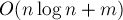

MAXimal
добавлено: 5 Aug 2011 1:55
редактировано: 5 Aug 2011 1:55
Содержание [скрыть]
Поиск мостов в режиме онлайн
Пусть дан неориентированный граф. Мостом называется такое ребро, удаление которого делает граф несвязным (или, точнее, увеличивает число компонент связности). Требуется найти все мосты в заданном графе.
Неформально эта задача ставится следующим образом: требуется найти на заданной карте дорог все "важные" дороги, т.е. такие дороги, что удаление любой из них приведёт к исчезновению пути между какой-то парой городов.
Описываемый здесь алгоритм является онлайновым, что означает, что входной граф не является известным заранее, а рёбра в него добавляются по одному, и после каждого такого добавления алгоритм пересчитывает все мосты в текущем графе. Иными словами, алгоритм предназначен для эффективной работы на динамическом, изменяющемся графе.
Более строго, постановка задачи следующая. Изначально граф пустой и состоит из  вершин. Затем поступают запросы, каждый из которых — это пара вершин
вершин. Затем поступают запросы, каждый из которых — это пара вершин  , которые обозначают ребро, добавляемое в граф. Требуется после каждого запроса, т.е. после добавления каждого ребра, выводить текущее количество мостов в графе. (При желании можно поддерживать и список всех рёбер-мостов, а также явно поддерживать компоненты рёберной двусвязности.)
, которые обозначают ребро, добавляемое в граф. Требуется после каждого запроса, т.е. после добавления каждого ребра, выводить текущее количество мостов в графе. (При желании можно поддерживать и список всех рёбер-мостов, а также явно поддерживать компоненты рёберной двусвязности.)
Описываемый ниже алгоритм работает за время , где  — число запросов. Алгоритм основан на структуре данных "система непересекающихся множеств".
— число запросов. Алгоритм основан на структуре данных "система непересекающихся множеств".
Приведённая реализация алгоритма, впрочем, работает за время , поскольку использует в одном месте упрощённую версию системы непересекающихся множеств без ранговой эвристики.
Алгоритм
Известно, что рёбра-мосты разбивают вершины графа на компоненты, называемые компонентами рёберной двусвязности. Если каждую компоненту рёберной двусвязности сжать в одну вершину, и оставить только рёбра-мосты между этими компонентами, то получится ациклический граф, т.е. лес.
Описываемый ниже алгоритм поддерживает в явном виде этот лес компонент рёберной двусвязности.
Понятно, что изначально, когда граф пустой, он содержит компонент рёберной двусвязности, не связанных никак между собой.
При добавлении очередного ребра может возникнуть три ситуации:
- Оба конца
 и
и  находятся в одной и той же компоненте рёберной двусвязности — тогда это ребро не является мостом, и ничего не меняет в структуре леса, поэтому просто пропускаем это ребро.
находятся в одной и той же компоненте рёберной двусвязности — тогда это ребро не является мостом, и ничего не меняет в структуре леса, поэтому просто пропускаем это ребро.Таким образом, в этом случае число мостов не меняется.
- Вершины и находятся в разных компонентах связности, т.е. соединяют два дерева. В этом случае ребро становится новым мостом, а эти два дерева объединяются в одно (а все старые мосты остаются).
Таким образом, в этом случае число мостов увеличивается на единицу.
- Вершины и находятся в одной компоненте связности, но в разных компонентах рёберной двусвязности. В этом случае это ребро образует цикл вместе с некоторыми из старых мостов. Все эти мосты перестают быть мостами, а образовавшийся цикл надо объединить в новую компоненту рёберной двусвязности.
Таким образом, в этом случае число мостов уменьшается на два или более.
Следовательно, вся задача сводится к эффективной реализации всех этих операций над лесом компонент.
Структуры данных для хранения леса
Всё, что нам понадобится из структур данных, — это система непересекающихся множеств. На самом деле, нам понадобится делать два экземпляра этой структуры: одна будет для поддержания компонент связности, другая — для поддержания компонент рёберной двусвязности.
Кроме того, для хранения структуры деревьев в лесу компонент двусвязности для каждой вершины будем хранить указатель на её предка в дереве.
Будем теперь последовательно разбирать каждую операцию, которую нам надо научиться реализовывать:
- Проверка, лежат ли две указанные вершины в одной компоненте связности/двусвязности. Делается обычным запросом к структуре "система непересекающихся множеств".
- Соединение двух деревьев в одно по некоторому ребру . Поскольку могло получиться, что ни вершина , ни вершина не являются корнями своих деревьев, то единственный способ соединить эти два дерева — переподвесить одно из них. Например, можно переподвесить одно дерево за вершину , и затем присоединить это к другому дереву, сделав вершину дочерней к .
Однако встаёт вопрос об эффективности операции переподвешивания: чтобы переподвесить дерево с корнем в
 за вершину
за вершину  , надо пройти по пути из в , перенаправляя указатели в обратную сторону, а также меняя ссылки на предка в системе непересекающихся множеств, отвечающей за компоненты связности.
, надо пройти по пути из в , перенаправляя указатели в обратную сторону, а также меняя ссылки на предка в системе непересекающихся множеств, отвечающей за компоненты связности.Таким образом, стоимость операции переподвешивания есть , где
 — высота дерева. Можно оценить её ещё выше, сказав, что это есть величина , где — число вершин в дереве.
— высота дерева. Можно оценить её ещё выше, сказав, что это есть величина , где — число вершин в дереве.Применим теперь такой стандартный приём: скажем, что из двух деревьев переподвешивать будем то, в котором меньше вершин. Тогда интуитивно понятно, что худший случай — когда объединяются два дерева примерно равного размера, но тогда в результате получается дерево вдвое большего размера, что не позволяет такой ситуации происходить много раз. Формально это можно записать в виде рекуррентного соотношения:
где через мы обозначили число операций, необходимое для получения дерева из
вершин с помощью операций переподвешивания и объединения деревьев. Это известное рекуррентное соотношение, и оно имеет решение  .
.Таким образом, суммарное время, затрачиваемое на всех переподвешивания, составит
 , если мы всегда будем переподвешивать меньшее из двух дерево.
, если мы всегда будем переподвешивать меньшее из двух дерево.Нам придётся поддерживать размеры каждой компоненты связности, но структура данных "система непересекающихся множеств" позволяет делать это без труда.
- Поиск цикла, образуемого добавлением нового ребра в какое-то дерево. Фактически это означает, что нам надо найти наименьшего общего предка (LCA) вершин и .
Заметим, что потом мы сожмём все вершины обнаруженного цикла в одну вершину, поэтому нас устроит любой алгоритма поиска LCA, работающий за время порядка его длины.
Поскольку вся информация о структуре дерева, которая у нас есть, — это ссылки на предков, то единственно возможным представляется следующий алгоритм поиска LCA: помечаем вершины
и как посещённые, затем переходим к их предкам и и помечаем их, потом к их предкам, и так далее, пока не случится, что хотя бы одна из двух текущих вершин уже помечена. Это будет означать, что текущая вершина — и есть искомый LCA, и надо будет заново повторить путь до неё от вершины и от вершины — тем самым мы найдём искомый цикл.Очевидно, что этот алгоритм работает за время порядка длины искомого цикла, поскольку каждый из двух указателей не мог пройти расстояние, большее этой длины.
- Сжатие цикла, образуемого добавлением нового ребра в какое-то дерево.
Нам требуется создать новую компоненту рёберной двусвязности, которая будет состоять из всех вершин обнаруженного цикла (понятно, что обнаруженный цикл сам мог состоять из каких-то компонент двусвязности, но это ничего не меняет). Кроме того, надо произвести сжатие таким образом, чтобы не нарушилась структура дерева, и все указатели и две системы непересекающихся множеств были корректными.
Самый простой способ добиться этого — сжать все вершины найденного цикла в их LCA. В самом деле, вершина-LCA — это самая высокая из сжимаемых вершин, т.е. её
 остаётся без изменений. Для всех остальных сжимаемых вершин обновлять тоже ничего не надо, поскольку эти вершины просто перестают существовать — в системе непересекающихся множеств для компонент двусвязности все эти вершины будут просто указывать на вершину-LCA.
остаётся без изменений. Для всех остальных сжимаемых вершин обновлять тоже ничего не надо, поскольку эти вершины просто перестают существовать — в системе непересекающихся множеств для компонент двусвязности все эти вершины будут просто указывать на вершину-LCA.Но тогда получится, что система непересекающихся множеств для компонент двусвязности работает без эвристики объединения по рангу: если мы всегда присоединяем вершины цикла к их LCA, то этой эвристике нет места. В этом случае в асимптотике возникнет
 , поскольку без эвристики по рангу любая операция с системой непересекающихся множеств работает именно за такое время.
, поскольку без эвристики по рангу любая операция с системой непересекающихся множеств работает именно за такое время.Для достижения асимптотики
 на один запрос необходимо объединять вершины цикла согласно ранговой эвристике, а затем присвоить нового лидера в .
на один запрос необходимо объединять вершины цикла согласно ранговой эвристике, а затем присвоить нового лидера в .
Реализация
Приведём здесь итоговую реализацию всего алгоритма.
В целях простоты система непересекающихся множеств для компонент двусвязности написана без ранговой эвристики, поэтому итоговая асимптотика составит на запрос в среднем. (О том, как достичь асимптотики , написано выше в пункте "Сжатие цикла".)
Также в данной реализации не хранятся сами рёбра-мосты, а хранится только их количество — см. переменная . Впрочем, при желании не составит никакого труда завести  из всех мостов.
из всех мостов.
Изначально следует вызвать функцию , которая инициализирует две системы непересекающихся множеств (выделяя каждую вершину в отдельное множество, и проставляя размер, равный единице), проставляет предков .
Основная функция — это , которая обрабатывает запрос на добавление нового ребра.
Константе  следует задать значение, равное максимально возможному количеству вершин во входном графе.
следует задать значение, равное максимально возможному количеству вершин во входном графе.
Более подробные пояснения к данной реализации см. ниже.
const int MAXN = ...; int n, bridges, par[MAXN], bl[MAXN], comp[MAXN], size[MAXN]; void init() { for (int i=0; i<n; ++i) { bl[i] = comp[i] = i; size[i] = 1; par[i] = -1; } bridges = 0; } int get (int v) { if (v==-1) return -1; return bl[v]==v ? v : bl[v]=get(bl[v]); } int get_comp (int v) { v = get(v); return comp[v]==v ? v : comp[v]=get_comp(comp[v]); } void make_root (int v) { v = get(v); int root = v, child = -1; while (v != -1) { int p = get(par[v]); par[v] = child; comp[v] = root; child=v; v=p; } size[root] = size[child]; } int cu, u[MAXN]; void merge_path (int a, int b) { ++cu; vector<int> va, vb; int lca = -1; for(;;) { if (a != -1) { a = get(a); va.pb (a); if (u[a] == cu) { lca = a; break; } u[a] = cu; a = par[a]; } if (b != -1) { b = get(b); vb.pb (b); if (u[b] == cu) { lca = b; break; } u[b] = cu; b = par[b]; } } for (size_t i=0; i<va.size(); ++i) { bl[va[i]] = lca; if (va[i] == lca) break; --bridges; } for (size_t i=0; i<vb.size(); ++i) { bl[vb[i]] = lca; if (vb[i] == lca) break; --bridges; } } void add_edge (int a, int b) { a = get(a); b = get(b); if (a == b) return; int ca = get_comp(a), cb = get_comp(b); if (ca != cb) { ++bridges; if (size[ca] > size[cb]) { swap (a, b); swap (ca, cb); } make_root (a); par[a] = comp[a] = b; size[cb] += size[a]; } else merge_path (a, b); }
Прокомментируем код более подробно.
Система непересекающихся множеств для компонент двусвязности хранится в массиве , а функция, возвращающая лидера компоненты двусвязности — это . Эту функцию используется много раз в остальном коде, поскольку нужно помнить о том, что после сжатия нескольких вершин в одну все эти вершины перестают существовать, а вместо них существует только их лидер, у которого и хранятся корректные данные (предок , предок в системе непересекающихся множеств для компонент связности, и т.д.).
Система непересекающихся множеств для компонент связности хранится в массиве , также есть дополнительный массив для хранения размеров компонент. Функция возвращает лидера компоненты связности (который на самом деле является корнем дерева).
Функция переподвешивания дерева  работает, как и было описано выше: она идёт от вершины по предкам до корня, каждый раз перенаправляя предка
работает, как и было описано выше: она идёт от вершины по предкам до корня, каждый раз перенаправляя предка  в обратную сторону (вниз, по направлению к вершине ). Также обновляется указатель
в обратную сторону (вниз, по направлению к вершине ). Также обновляется указатель  в системе непересекающихся множеств для компонент связности, чтобы он указывал на новый корень. После переподвешивания у нового корня проставляется размер
в системе непересекающихся множеств для компонент связности, чтобы он указывал на новый корень. После переподвешивания у нового корня проставляется размер  компоненты связности. Обратим внимание, что при реализации мы каждый раз вызываем функцию , чтобы получить доступ именно к лидеру компоненты сильной связности, а не к какой-то вершине, которая возможно уже была сжата.
компоненты связности. Обратим внимание, что при реализации мы каждый раз вызываем функцию , чтобы получить доступ именно к лидеру компоненты сильной связности, а не к какой-то вершине, которая возможно уже была сжата.
Функция обнаружения и сжатия пути , как и было описано выше, ищет LCA вершин и , для чего поднимается от них параллельно вверх, пока какая-то вершина не встретится во второй раз. В целях эффективности пройденные вершины помечаются с помощью техники "числового used", что работает за вместо применения  . Пройденные пути сохраняются в векторах и , чтобы потом пройтись по ним второй раз до LCA, получив тем самым все вершины цикла. Все вершины цикла сжимаются, путём присоединения их к LCA (здесь возникает асимптотика , поскольку при сжатии мы не используем ранговую эвристику). Попутно считается число пройденных рёбер, которое равно количеству мостов в обнаруженном цикле (это количество отнимается от ).
. Пройденные пути сохраняются в векторах и , чтобы потом пройтись по ним второй раз до LCA, получив тем самым все вершины цикла. Все вершины цикла сжимаются, путём присоединения их к LCA (здесь возникает асимптотика , поскольку при сжатии мы не используем ранговую эвристику). Попутно считается число пройденных рёбер, которое равно количеству мостов в обнаруженном цикле (это количество отнимается от ).
Наконец, функция обработки запросов определяет компоненты связности, в которых лежат вершины и , и если они лежат в разных компонентах связности, то меньшее дерево переподвешивается за новый корень и затем присоединяется к большему дереву. Иначе же, если вершины и лежат в одном дереве, но в разных компонентах двусвязности, то вызывается функция , которая обнаружит цикл и сожмёт его в одну компоненту двусвязности.